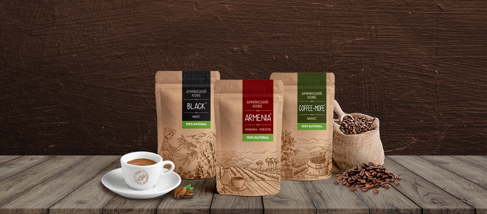

Սկսեք օրը մեկ բաժակ հայկական սուրճի հետ
Հայկական սուրճ
Դժվար է գտնել ավելի տիպիկ հայկական ըմպելիք, քան սուրճն է: Հայաստանում ուր էլ գնաք, առաջինն, ինչ Ձեզ կառաջարկեն օրվա ցանկացած ժամին, սուրճն է: Սուրճը համարվում է «Աստվածների ըմպելիք»: Այն թարմացնում է մարմինը և ոգին, պաշտպանում է շատ հիվանդություններից և բարձրացնում տրամադրությունը: Սուրճը հիանալի առիթ է զրուցելու համար: Հայաստանում սուրճը պատրաստում են առանձնահատուկ բաղադրատոմսով: Աղալուց առաջ սուրճի հատիկները բովում են շիկացած տապակի վրա, մինչև թեթև բովվածք, այնուհետև աղալով՝ փոշու վերածում: Դրանից հետո սրճեփի մեջ լցվում է մեկ գդալ սուրճ, շաքար՝ ըստ ճաշակի և մեկ գավաթ ջուր: Աստված մի արասցե՝ այն եռացնեք: Սուրճը կրակից վերցնում են մինչ եռալը՝ փրփուրը տեսնելուն պես: Հատուկ համային փունջ ստանալու համար սուրճին երբեմն ավելացնում են կոնյակ:
Հայաստանը սուրճի համաշխարհային կենտրոն է
XIX դարում Կոլումբիա են ժամանել հայ գաղթականներ և այնտեղ հիմնել հայկական գաղութ, որն անվանել են «Արմենիա»: Այս քաղաքում է գտնվում աշխարհի ամենահայտնի սուրճի թանգարանը: Դա պատահական չէ, քանի որ հենց Քինդիո նահանգն է Կոլումբիայում բուրումնավետ սուրճի առաջատար արտադրողը:

Հայաստանը սուրճի համաշխարհային կենտրոն է
Պատմաբանների վկայությամբ XVI դարում սուրճը Եվրոպա են բերել հենց հայ վաճառականները: XVII դարի երկրորդ կեսին Հարություն անունով հայ վաճառականը Փարիզում բացեց սուրճի առաջին տաղավարը: Ավելի ուշ նրա հայրենակիցն այստեղ սրճարան բացեց: Փարիզյան սուրճի նորաձևությունը շուտով տարածվեց նաև եվրոպական այլ քաղաքներում: